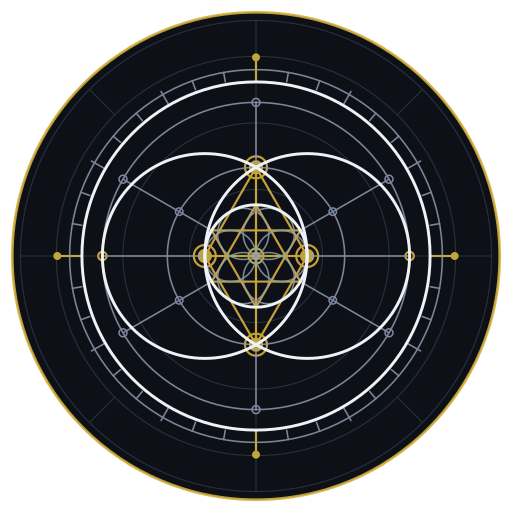

Proclus Diadochus¶

Proclus Diadochus (412–485 CE), Neoplatonic head of the Athenian Academy, composed the richest surviving ancient philosophy of mathematics in his commentary on the first book of Euclid’s Elements. Here his prologues, axiomatic inquiries, Eudemian history of early Greek geometry, and proposition-by-proposition commentary appear in synchronized English and Greek tracks paired with Friedlein folio citations and calibrated diagrams.
Works in This Archive¶
Friedlein 1873 & Taylor 1792 · Prologues · Principles · Propositions I.1–I.48
Commentary on the First Book of Euclid’s Elements (*In Primum Euclidis*) — Surveys the nature of mathematical imagination and geometric proof in two sweeping Prologues, analyzes Euclid’s definitions, postulates, and common notions, and comments across all 48 propositions of Book I with 133 calibrated vector figures.
Key Features¶
Synchronized Four-Track Codex
Read every prologue, definition, postulate, and proposition side by side across English, Friedlein’s critical Greek, Summary, and primary-source Notes tracks.
164 Friedlein Citation Loci
Trace every ancient historical fragment and philosophical citation through the Friedlein Concordance, linking directly across euclid and hoenen.
133 Calibrated Vector Diagrams
Interactive .euclid-graphic SVGs illuminate Proclus’s geometric cases, converses, and auxiliary constructions throughout Book I.
Reference & Project¶
Scholarly Apparatus
People — Prosopographical register of 54 geometers and philosophers, including the Eudemian Summary
Friedlein Concordance & Bibliography — Canonical Friedlein pagination and critical editions
Glossary — Lexicon of 44 Neoplatonic and Euclidean terms
About This Project
About — Scope, sources, and editorial methodology
Using This Edition — Reading guide, track switching, and diagram controls
Log, Changelog, & Modules — Journal, release history, and package reference